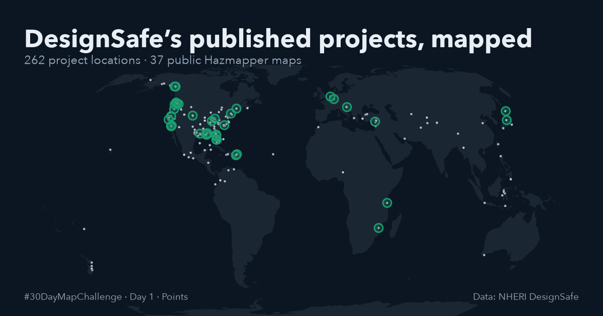
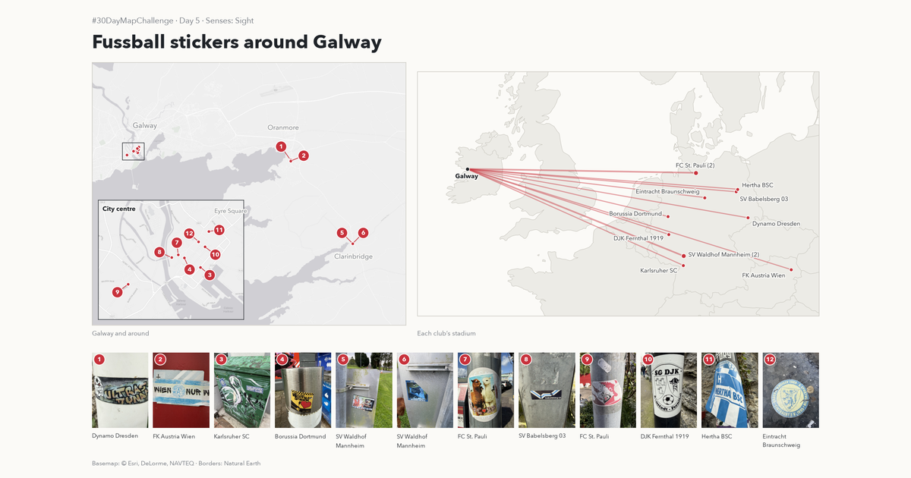
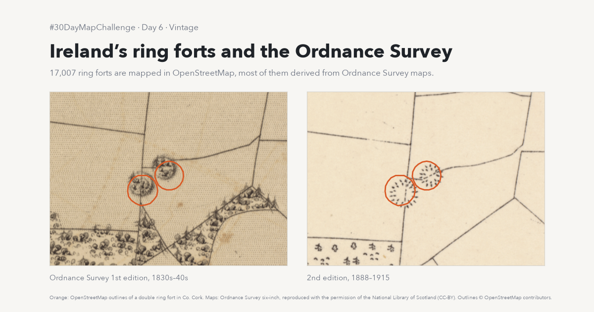

#30DayMapChallenge 2026
My maps for the #30DayMapChallenge, November 2026.
-

Day 1 · Points
DesignSafe’s published projects, mapped
Where DesignSafe’s published natural hazards projects happened, and a walk through every public Hazmapper map.
-

Day 5 · Sight
Fussball stickers around Galway
Flip through the Fussball stickers I’ve photographed around Galway, with where each one was and its club’s stadium.
-

Day 6 · Vintage
Ireland’s ring forts and the Ordnance Survey
The 17,007 ring forts in OpenStreetMap, on the old Ordnance Survey and War Office maps most of them were derived from.